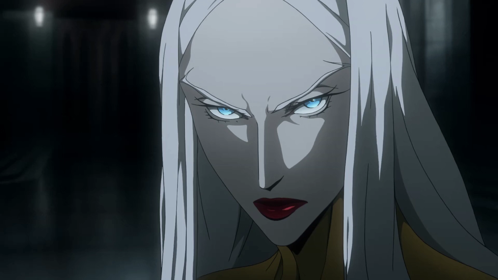
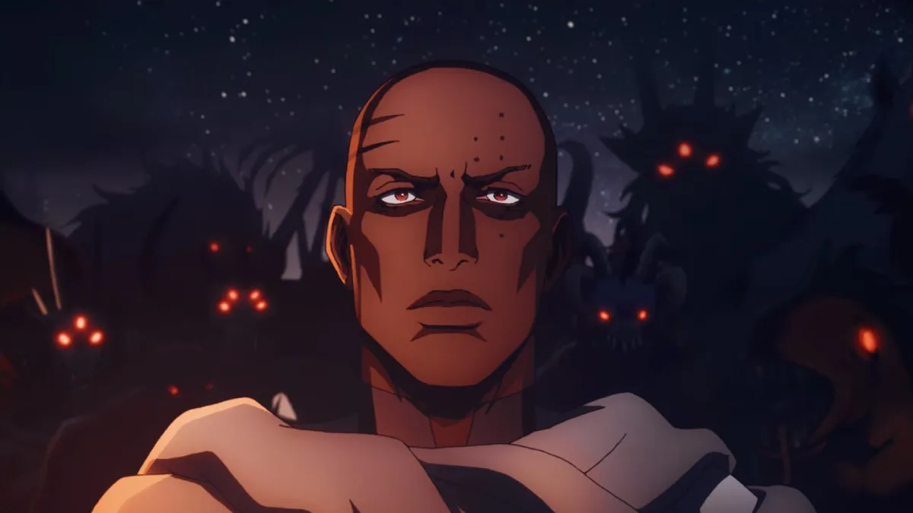
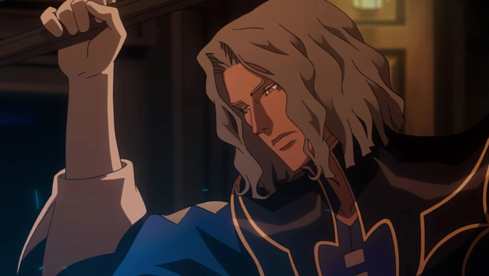

Castlevania: Characters
Carmilla
Voice Actor: Jaime Murray
Carmilla is a powerful and cunning vampire who presents herself as a sophisticated aristocrat. Her elegant appearance, marked by her refined attire and graceful demeanor, contrasts sharply with her ruthless ambition. As a major antagonist, she is driven by her desire for power and control, and her manipulative strategies highlight her formidable intellect and strategic mind. Carmilla's interactions are often laced with a dangerous blend of charm and cruelty, making her a formidable adversary in the series.
Isaac
Voice Actor: Adetokumboh M'Cormack
Isaac is a unique night creature, known for his status as a forge master—one who creates nightmarish beasts and loyal minions from the corpses of the dead. His appearance is marked by a dark, imposing presence, often clad in heavy, battle-worn armor. Isaac’s motivations are deeply intertwined with his quest for revenge and his desire to build a new world free from human oppression. His complex backstory and tragic experiences reveal a character driven by both pain and a fierce sense of justice.
Hector
Voice Actor: Theo James
Hector, another forge master, is known for his troubled past and conflicted loyalties. Unlike Isaac, Hector appears more disheveled and less imposing, with a somewhat ragged appearance that reflects his internal struggles. His role in the series evolves as he grapples with his own moral dilemmas and the consequences of his actions. Hector’s journey is one of redemption and self-discovery, making him a compelling and empathetic character amidst the chaos of the series.